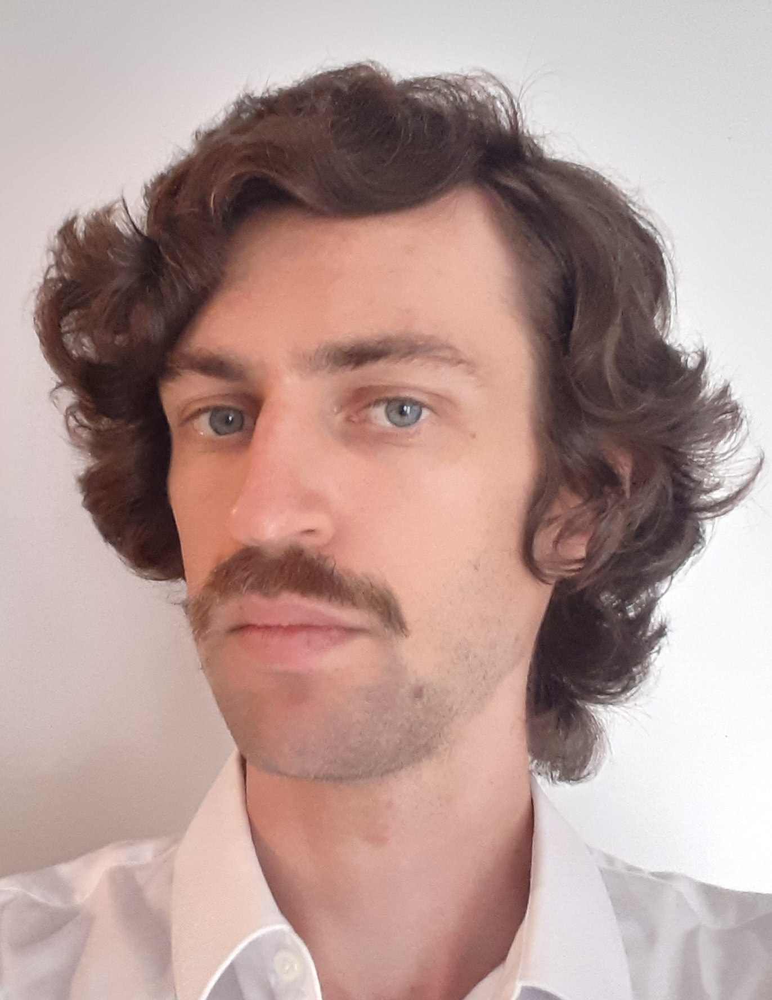

I am an associate professor (maître de conférences) in computer science at LAMSADE, Paris Dauphine University – PSL, in the MILES project-team. My research focuses on the theory of deep learning, in particular the optimization and regularization of neural networks.
I completed my PhD in Machine Learning in March 2020, supervised by Guillaume Charpiat and Yann Ollivier, at the TAU team, LRI.
Here is my CV: [eng].
Thesis: Structural Learning of Neural Networks
[PDF file]
[link].
Defense carried out on March 6th, 2020.
2024 – now: associate professor (maître de conférences) in Computer Science, MILES project-team, LAMSADE, Paris Dauphine University – PSL, France.
2023 – 2024: post-doctoral researcher in the Probability and Statistics team, Paris-Saclay University, France (supervised by Gilles Blanchard and Christophe Giraud).
2021 – 2023: post-doctoral researcher in the Statify team, LJK, Inria Grenoble-Alpes, France (supervised by Julyan Arbel).
2020 – 2021: post-doctoral researcher at the Department of Statistics, University of Oxford, UK (supervised by Judith Rousseau).
2020: PhD in Computer Science, Paris-Saclay University.
2016: Graduate degree in Mathematics (minor in Physics) at the École Normale Supérieure (Paris).
2016: Master degree in Mathematics (Probability and Statistics), Paris-Sud University.
2016 – 2020: PhD student in Computer Science at the TAO/Tau team, LRI, Paris-Sud University/Inria Saclay, France (supervised by Guillaume Charpiat and Yann Ollivier).
2011 – 2016: Math student at the École Normale Supérieure, Paris, France.
2008 – 2011: Physics/Chemistry student in "classe préparatoire".